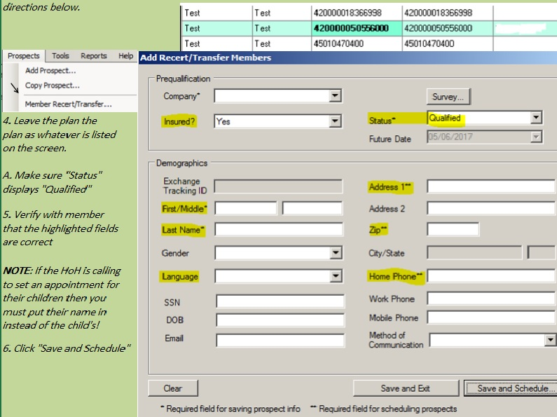
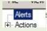
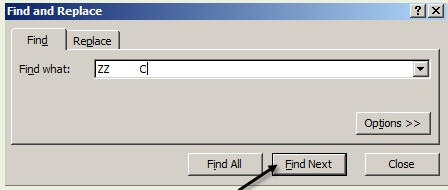
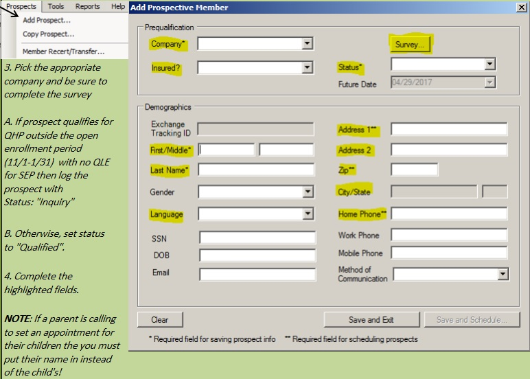
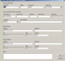
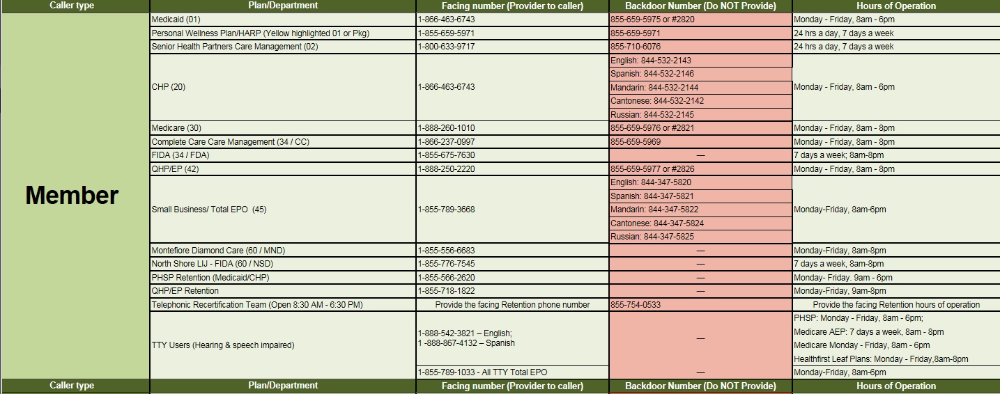
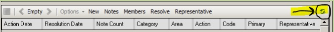
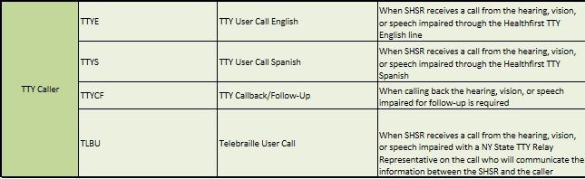

Acceptable NYSOH referral Scenarios
A member/prospect may only be referred to the NYSOH phone line if they fit one of these scenarios:
NYSOH Website URL:
nystateofheath.ny.gov
* Subscriber or account changes such as:
* Demographic changes:
-- Changes in Name(including spelling), address, Date of Birth, phone number, Social Security Number, etc.
* Changes in Advance Premium Tax Credit (APTC):
For example: A change in income withikn the same plan such as EP1 to EP4.
* Change in the subscriber of the policy (HOH Change):
* When the (subscriber/HOH) wants to add or remove an individual from the policy
* When the (subscriber/HOH) wants to terminate active QHP coverage
* When the (subscriber/HOH) requests to change plans during OE or Special Enrollment periods.
* Problems with signing into the NYSOH online account or updating an application.
NOTE: If a Facilitated Enroller (FE) (at a physical location) assisted with the Marketplace account creation, the member may be referred to the FE for assistance.
* Subscriber/HOH has not recieved the original/initial 1095 tax form.
* If the member has never recieved the original/initial 1095 tax form, the SHSR will advise the member/HOH to log into their NYSOH portal account for more information.
* Only if the member states that they're unable to access their NYSOH portal account (technical issues, password issues), the SHSR may refer the member to the NYSOH phone number.
* If a Facilitated Enroller(FE) (at a physical location) assisted with the Marketplace account creation, the member may be referred to the FE for assistance.
NOTE: For discrpenacies, gaps in coverage or missing corrected 1095 forms, the SHSR will warm transfer the member to the Member Services for handling.
* The consumer has questions about Marketplace notices.
* Subscriber/HOH does not know their renewal timeframe after checking NYSOH notifications and NYSOH portal found on their website.
Examples
Examples
Caller does not know their recertification
timeframe and is not sure they remember
their password. They want to know what
to do just in case
Caller needs their recertification
timeframe and doesn't know if they
checked the website yet
Caller does not think the tax forms
they have are accurately showing when
they were insured
Caller needs their recertification
timesframe and doesn't know if they've
checked the website yet
Caller says they never got their tax
froms from the NYSOH
Caller says they need their tax forms
resent from the NYSOH or that they
lost their tax forms
Caller verifies address and they insist
that they live on the 4th floor and
not apartment 4
NYSOH Phone number SECOND - BOTH MUST BE CALLED
Caller claims their phone number with
the NYSOH was changed and the wrong
one is on file in OnContact
NYSOH Phone number SECOND - BOTH MUST BE CALLED
Caller want to add their child to their plan
Accessing and using CRM
CRM must be used on every Inbound and Outbound call; you should be able to access this new tool within the new Citirx environment.
Try to use this Job Aid while assisting callers to improve the utilization of CRM when logging-in all interactions with members and prospects
A. Access to CRM tool - Normal procedure
1. Open the following link https://sgshfcrm01.crm.dynamics.com in your internal browser; it should open to one of two pages.
a. If the below page opens, simply click on your account to open the CRM interface.
B. Otherwise, you myust enter your CRM-ID as it is shown in the image below.
It will be your NT ID (The current ID you use to log into your computer ) and @sutherlandglobal added to the end.

C. If done correctly, then you'll get the below prompt before being taken to the CRM interface
a. Enter your computer password (if prompted to enter a password)
b. If you do not see this message after entering your ID, then try it again by closing the page and following the above steps one
more time starting from Step 1.
D. The CRM interface should now be open.
Click "+New" as indicated below to add a new record/caller interaction.
E. The caller/prospect interface should be open.
All fields/lines maked with a red asterisk must be filled out. The HoH's name must be filled in instead of the member's if the member is
below 18.
Important Note:
First field/line pertaining "Propsects ID" will not be required to get filled in.
a. For those fields/lines requirign City, State and Zip, you can get them "filled all three at once" by entering the Zip code and
pressing
"Enter" (in your keyboard), and selecting the Zip code that will pop up
b. Doing so will populate the City and State as seen:
F. Once all the fields/lines shown with the "*" are filled in , you must click "Save & Close" to wrap it up/complete the interaction:
and restart
from Step 4 if you would need to add another interaction.
However, if by any chance you recieved an error message regarding an existing duplicate phone number, that could already
included in the CRM database, you would need to "Modify and existing record"
Modify an existing record
If a record was already entered by another Sutherland agent into CRm for the same caller you are currently assisting, then you must
modify the existing record with the new details of your interaction.
This procedure must be followed if you had recieved the below notification:
1. If the error is as pictures below, then there's an existing file for that phone number that must be modified. Approach floor support if this is not the error you recieved.
Click the magnifying glass at the top right of the page to search a phone number. It must be entered in (xxx) xxx-xxxx format , as pictured below, to locate the file:
Click "OK" if this message appears:
2. The file should now appear. Click on it to open the file
3. Update the lines by clicking on each of them that needs to be updated to reflect the most current interaction. Only input one interaction in the case that multiple member/prospect accounts were interacted with that all use the same phone number.
4. Click "Save and Close" to complete the interaction.
Proceedure for insufficient information
Click "+New" as indicated below, to add a new record/caller interaction.
A. The caller/prosepct interface should be open.
All fields/lines marked with a red asterisk must still be filled out. The HoH's name must be filled in instead of the member's if the member is below 18.
Important Note:
First field/line pertaining to "Prospects ID" wil not be required to be filled in.
a. The name and address lines may be filled in with "N/A" if that information is unavailable
b. The phone number should be filled in with one of three numbers:
I. The phone number given for callback by the calller.
II. The phone number given by member services for callback before they transfer the call
III. Or the phone number displayed on your phone when the call is recieved.
C. For those fields/lines requiring City, State and Zip , you can get them "filled all three at once" by entering the Zip code and pressing "Enter". if the Zip Code is unvailable, then the Zip code 00601 may be used instead.
d. Doing so will populate the City and State as seen:
B. Once all the fields/lines shown with "*" are filled in , you must click "Save & Close" to wrap it up / complete the interaction
and restart from Step 4 if you would need to add another interaction.
However, if by chance, you recieved an error message regarding an existing duplicate phone number, that coudl be already included in the CRM database, you would need to "Modify an Existing record"
Outbound Disposition List
Interactions from outbound calls must also be recorded in CRM. Most interactions will require answering as seen below after following the steps in the normal procedure, and then filling in the "Other" lines with explanations depending on your interaction's disposition.
Select the disposition used on the outbound interaction
1. For the "Complete: Already Renewed" disposition, change the following line as shown below:
For the "Other" line, type OB call to renew. Mbr already newed with HF
nbsp; 2. If an appointment is scheduled and "Complete:Home Appointment Scheduled" is used, then follow the normal procedure outlined above.
3. If the "Complete:Referred to Site/CBO" disposition is used, then change the following line if the call was transferred to another department:
And fill the department name with the department the call was connected to.
Fill the "Other" lines with:
o If referred to a phone number or website: OB call to renew. Referred mbr to _____.
o If referred to a HF location to renew: OB call to renew. Mbr opted to walk into a location.
Aux Codes
Aux Code
0
1
2
3
4
5
6
7
8
9
*
Catastrophic Health Insurance (HealthFirst's Green Plan, for example) -
* Catastrophic plans cover preventive care up to three primary care visits per year before the deductible, but virtually all other covered services
* Awards benefits to pay for the cost of severe or lengthly disability or illness. benefits on some policies are not paid until a
* Protects the insured, in the event of a specified major health event, during a period of time. Catastrophic illness.
COB - Coordination of benefits
Coordination of benefits is a practice used to ensure that insurance claims are not paid multiple tiems when someone is insured under multiple plans.
A process whereby two or more insurasnce companies or insuring entities apportion each one's share of the responsibility for payment of a claim for the client.
The percentage you pay for some covered servicesa. If your coinsurance is 20 percent, your health insurance company will pay 80 percent of the claim.
Conventional indemnity plan - An indemnity that allows the participant the choice of any provider without the effect on reimbursement. These plans reimburse the patient and/or provider as expenses are incurred.
Copayment
The flat fee you pay when you see a doctor or get other services
Deductible
The amount you pay each year before your health plan starts paying for services (Only have to pay copayments, coinsurance, and monthly premium after the deductible is met.)
EOB - Explanation of Benefits statement - May show up as a letter stating "THIS IS NOT A BILL" to members. A statement sent by a health insurance company to covered individuals explaining what medical treatments and/or services were paid for on their behalf.
ERA - Electronic Remittance Advice- The same as the EOB above, but sent to providers instead. The only major difference betweeen the two.
Exclusive Provider Organization (EPO) plan - A more restrictive type of preferred provider organization plan under which employees must use providers for a specified network of physicians and hospitals to recieve coverage; there is no coverage for care recieved from a non-network provider except in an emergency situation.
Family physicians - Focuts on the health care needs of the entire family. Not all family physicians include maternity care in their practive. Those <-- Knowledge base leaves off here -->
Health Insurance - A type of insurance that helps pay for health care services. It helps limit your risk of paying for expensive services when you are sick or injured. PHSP stands for:Private Health Services Plan (Healthfirst for example). QHP stands for Qualified Health Plan (Healthfirst's Leaf plans for example)
Health Maintenance organization (HMO) - A health care system that assumes both the financial risk associated with providing comprehensive medical services (insurance and service risk) and the responsibility for health care delivery in a particular geographic area to HMO members, usually in return for a fixed, prepaid fee. Financial risk may be shared with teh providers in participating in the HMO.
Health Plans - A health insurance product that offers a specific set of benefits for a certain cost.
Indemnity Plan - A type of medical plan that reimburses the patient and/or provider as expenses are incurred
Individual Practice Association (IPA) HMO - An HMO or other managed care plan contracted with an IPA, which in turn contracts with independant physicians to treat members at discounted fees or on a capitation basis. The typical IPA encompassse all specialties, but an IPA can be solely for primary care or could be single specialty.
Managed care plans - Managed care plans generally provide comprehensive health services to their members, and offer financial incentives for patients to use the providers who belong to the plan. Examples of managed care plans include:
* Health maintenance organizations (HMOs)
* Preferred provider organizations (PPOs)
* Exclusive provider organizations (EPOs)
Maximum Out of pocket - The most you have to pay for covered services ina plan year. After you spend this amount on deductibles, copayments, and coinsurance, your health plan pays 100% of the costs of covered benefits (Make no further payment except monthly premium)
Medicare - Medicare is a government program that provides medical care to seniors (individuals ages 65 and older). People of all ages with certain diseases also qualify for Medicare (e.g., end stage renal disease). Today, approximately 45 million seniors are covered by Medicare. Medicare is broken down into four parts; hospital insurance (Part A), medical coverage (Part B), the Medical Advantage Plan (Part C), and the newer Prescription Drug Coverage (Part D). The Medicare Advantage plan is a health option offered through private insurance companies. In most cases, there are extra benefits and lower copayments than in the original Medicare Plan while still retaining the benefits or Part A and B.
Medicare Advantage(MA) - Part of the traditional Medicare but offered through private insurance companies. MA plans can include a variety of health plans such as HMO or PPO, prescription drug plans, as well as wellness and prevention benefits. Approximately 10 million or 25 percent of Medicare-eligible seniors are enrolled in Medicare Advantage plans. This part C replaces Parts A and B while still retaining their benefits.
Nurse Practictioner - A registered nurse who has advanced skills in the assessment of physical and psychosocial health status of individuals, familed and groups in a variety of settings through medical history taking and physical examination and breaast exams and pap smears as well as family planning:
Certified midwives(CM) are new professionals int he health care field. Like certified nurse-midwives, CM's are certified by the American College of Nurse Midwives, but come from backgrouinds other than nursing (including physician assistants, physical therapists and other health professionals). The settigns in which they practice and the care they provide is comparable to CNM's.
Certified Professional Midwives (CPM) have passsed the certification exam of the North American registry of Midwives (NARM). NARM certification recognizes multiple routes of entry into midwifery, and most CPM's become midwives without first becoming a nurse. CPM's provide prenatal care, care during labor and birth, and postpartum care of them other and her baby in the early weeks afgter birth. Most CPM's attend birth in birth centers or at home.
Out of network - Doctors, hospitals, labs and other health care providers who do not have a contract with a health insurance company. Members typically pay high premiums and/or out of pocket for care.
Out of pocket costs - The amount you pay for your health care services. The Health Care Law sets a limit on your out of pocket costs, called an out-of-pocket.
PCP - Primary Care Physicians who often acts as the primary gatekeeper in health plans. In HMOs all members must choose or are assigned a PCP and the PCP must approve referrals to specialists.
Physician-hospital organization(PHO) - Alliances between physicians and hospitals to help providers attain market share, improve barganing power and reduce administrative costs These entities sell their services to managed care organizations or directly to employers.
Point of service plan(POS) - A plan that combines features of an HMO and PPO. You must choose a PCP to oversee your care. You also have the option of paying more to
Preferred provider organization - A type of health plan that allows members to see providers in and out of the network. You pay lower costs when you see network providers. But you can go outside the network and pay more for your services.
Premium - The fee you pay to your insurance company each month to pay your share of your health plan's costs. This is seperate from the deductible.
Uninsured - There are currently 46 million Americans who do not have health insurance. In addition to those who can't afford health care, millions more are "underinsured" and struggle to pay medical bills or go without needed care because of cost. Covering the uninsured is one of the key objectives of health
Call opening/Greeting -
"Good Morning/Afternoon/Evening. Thank you for calling Healthfirst, my name is________________. How may I assist you today?
Acknowledge, Empathize
Reassure - "I'll be happy to assist you with that." (Display empathy for the situation as necessary)
"To do that, I'll be asking you a series of questions, is that okay ? "
Ask Information - "To start with, may I have your first and last name?" (Make sure to use the caller's name, and anyone else's name you speak to, at least once during the call ).
"May I also have a good callback number in case we get disconnected ? "
Note: The caller may be calling to get someone else not dependent on the caller signed up for HealthFirst. In this case, maek sure you get all this information for the prospect, not the caller, and advise that the prospect seeking insurance must show up for the appointment with the required documents.
1. Is the prospect currently a NY goverment employee or do they currently have any other types of active health insurance?
2. Did the prospect ever previously have HealthFirst insurance
3. How soon does the prospect need the insurance
4. Is the prospect a legal resident, a US citizen, or only applying for minors that are under the age of 19?
5. What zip code is the prospect currently living in?
6. What is the prospect's date of birth
7. "Are you currently single or married ?"
8. "How many people are you applying for?" Make sure children are under the age of 25
A. Ask for the Spouse/Child/Other dependents' date of birth and income and input to Pre-Qualifier tool.
B. "Is there anyone on your taxes that you're not applying for including yourself?". Do NOT count spouse or kids 29+
C. Are all of the other applicants age 19 and up legal residents as well?
8. For family members who do not need insurance, place "0" in the prequalifier tool
9. "Are you recieved SSI other than disability, or cash assistance or food stamps?"
10. "Are you currently employed?" (If you used the calculator, select "Yes" and "Calculator"
Ask if the prospect/member would like vision and dental coverage and then verify income, date of birth (enter DOB and any others applying), zip code and family size (0) before calcualating plans in the prequalifier tool.
Recommendation - See what the prospect qualifies for. DO NOT give the premium, co-insurance/payment or any other cost info FOR the Total EPO plans if the prospect qualifies for them, just say that they qualify for the Total EPO and answer any other questions they have on the plan.
If the prospect qualified for the Leaf/EPO plans then they MUSt have a qualifying life event (QLE) to have a special enrollment period (SEP) for enrollment into the plans.
Otherwise for other plans or with a SEP:
"Congratulations, based on the information you have provided, you may be eligible for (NAME OF THE PLAN). This plan has a premium to be paid of ___ (give the range from bronze to platinum if QHP)"
"I'll go ahead and set up an appointment for you to meet with one of our representatives in one of our community offices that is close to your location."
"We need to set up an appointment that is a minimum of two business days from the day of this call. Tell me, what's the most convenient date and time for you ?"
Complete Prospect Demographics - Locate the closest appointment location that can accomodate the reapplication or new sign up of the prospect through use of the HF locations map.
A. Use of the MP sites sheet is mandatory for each call to confirm location information is accurate.
B. Remember that you must accept a h ome appointment if the prospect requests it specifically. If the prospect is disabled, sick, or otherwise home bound you should offer it as an option.
2. Add the prospect and complete the required boxes in the window that appears as shown here.
3. Pick the appropriate company and be sure to complete the survey
A. If the prospect qualifies for QHP outside the open enrollment period (11/1-1/31) with no QLE for SEP then log the prospect with Status: "Inquiry"
B. Otherwise, set status to "Qualified"
4.) Complete the highlighted fields.
NOTE: If a parent is calling to set an appointment for their children then you must put their name in instead of the child's!
5.) Click "Save and Schedule", or if logging the prospect "Save and Exit" and proceed with the closing.
1. Fill the appropriate number of new and recertfying applicants
2. Select the earliest date the prospect will be available, but no earlier than Wednesday, August 15th.
3. Always select "First Request"
4. Select "At Home" if a Non CBO Appointment, or "At CBO" if located in a CBO then select the CBO and proceed to #7:
5. Enter home zip code or the dummy zip code corresponding to the chosen location:
Bronx - 0001
Brooklyn - 00002
Interboro - 00009
Manhattan - 00003
Nassau - 00006
Queens - 00004
Staten Island - 00005
Telephonic - 10013
6. Select the appropriate manager or location decided earlier in the call
7. Offer the prospect the available times shown and check off the one they select
8. complete the notes as shown in the picture above. You may copy these notes for use in the prospect tab SAPT01 and member tab MPAS codes.
NOTE: If the prospect/member qualified for QHP plans and has a SEP then you MUST notate the QLE in the appointment notes
9. Confirm all details before scheduling the appointment
"Just a quick review, your appointment is on (provide date) at (provide time)"
"You will be meeting our representatives at this address (provide address)."
"Please do not forget to have availalble originals and copies of the required documents:
Social Security ANumber (for each applicant over 16 years old )
Proof of citizenship or eligible immigrant status (US passport, Naturalization Certifiace, US Birth Certificate, Green Card, Visa)
Proof of income (pay stubs, W-2 Forms with 1040 forms, tax returns, financial support letter, unemployment online)
Photo ID
A blank check in case a premium payment is required to effectuate covearge
A discontinuance letter from the prospect's previous insurance with an expiration before the HealthFirst insurance would take effect (If previous insurance is off-exchange CHP or a non PHSP plan)
Schedule ID number (Do you have pen and paper handy so I can give you your scheduling ID number ? )
Offer Additional Assistance/Call Closing - Medicad/CHP
OEP/ACTIVE "Is there anything else I can help you with today? If you need further assistance you can call us back at 855-566-2620, we are open Monday-Saturday from 8am - 8 pm . Thank you for calling HealthFirst. Have a great day."
OEP/INACTIVE: "Is there anything else I can help you with today? If you need further assistance you can call us back at 888-974-9886, we are open Monday-Saturday from 8am - 8 pm . Thank you for calling HealthFirst. Have a great day."
Outside OEP/Active:"Is there anything else I can help you with today? If you need further assistance you can call us back at 855-566-2620, we are open Monday-Friday from 9am - 6 pm . Thank you for calling HealthFirst. Have a great day."
Outside OEP/InActive: "Is there anything else I can help you with today? If you need further assistance you can call us back at 888 974-9886, we are open Monday-Friday from 9am - 6 pm . Thank you for calling HealthFirst. Have a great day."
Offer Additional Assistance/Call Closing - QHP/EP
OEP/ACTIVE: "Is there anything else I can help you with today? If you need further assistance you can call us back at 855-718-1822 , we are open Monday - Saturday from 8 AM to 8 PM. Thank you for calling HealthFirst. Have a great day"
OEP/INACTIVE:"Is there anything else I can help you with today? If you need further assistance you can call us back at 888 975-9881 , we are open Monday - Saturday from 8 AM to 8 PM. Thank you for calling HealthFirst. Have a great day"
OUTSIDE OEP/ACTIVE:"Is there anything else I can help you with today? If you need further assistance you can call us back at 855-718-1822 , we are open Monday - Friday from 9 AM to 8 PM. Thank you for calling HealthFirst. Have a great day"
OUTSIDE OEP/INACTIVE:"Is there anything else I can help you with today? If you need further assistance you can call us back at 888 975-9881 , we are open Monday - Friday from 9 AM to 8 PM. Thank you for calling HealthFirst. Have a great day"
Alerts If in alerts you see that there is an alert for "Remind Member to Recertify as:

then double-click the alert and notate the auto-generated RCR code with the resolution of the alert. EX: Member caled to recertify. Schecduled appointment and reminded memmber to recertify.
Make sure to notate all accounts and click the refresh button, as highlighted above, on each account to ensure all the automatically generated codes can be notated as well.
Call Opening/Greeting - "Good Morning/Afternoon/Evening. Thank you for calling HealthFirst, my name is ____________. How may I assist you today ?
Acknowledge, Empathize, Reassure - "Let me make sure I understand. You're calling in today to _______________. Is that correct ? "
"I'll be happy to assist you with that. " (Display empathy for the situation as necessary)
Privacy Statement "We want y ou to know that HealthFirst protects your privacy and that you aren't required to provide any health-related information during this call."
Ask Information - "To start with, may I have your full name ?" (Make sure to use the caller's name, and anyone else's name you speak to , at least once during the call )
" May I also have a callback number in case we get disconnected ?"
NOTE: If the member does not give a callback number then you must state that a callback will not be made if the call looses connection
Locate account - "Thank you for that information. May I have your HealthFirst Member ID number so I can locate your account?"
(The ID numbewr would be under the member's name on their ID card)
Try these in order and mark the one used to locate the account.
Verify the perswon you're speaking with is allowed to access the account by using the table below:
If the caller is not an authorized party on the account and believes that they should be then do not give them any information on the account. Refer to the table below to refer the propoer entity to seek further assistance. Otherwise, ask that the caller have somone listed on the account callback and give the retention phone number.
A minimum of 4 demographics must be verified before an authorized party mayb e given any information of an account. The checklist below can be used as an aid to ensure HIPPA compliance for your calls.
A. An authorized party may give the caller one time authorization to speak regarding the account, In this case you may speak with them, but make sure to document their name in all the codes so it's known who any information was given to:
Select the plan the member has:
What specifically is the member calling in about ?
Select the plan . Select if on or off exchange. Select what the member is calling about .
1. Search the prospect tab by phone number to ensure an appointment has not already been scheduled.
2. For telephonic appointments, decide on a date for the call, making sure that the appointment date is within the time the member is enrolled so they can renew, and then ship to step #3. Otherwise, locate the closest appointment location that can accomodate the desired acceptable time and date for the appointment through the use of the HF locations map
A. Use of the MP sites sheets is mandatory for each call to confirm location information is accurate
B. Remember that you must accept a home appointment if the prospect/member requests it specifically, but only proaqctively offer a home appointment if the prospect is disabled, sick or otherwise home bound.
3. Make sure the account be recertified is selected as shown below, then click "Member recert/transfer" and follow the directions below:

1. Fill in the appropriate number of new and recertifying applicants
2. Select the earliest date prospect will be available, but no earlier than Wednesday, August 15th.
3. Always select "First Request"
4. Select "At Home" if a Non CBO appointment then proceed, or "At CBO" if located in a CBO then select the CBO and proceed to #7.
5. Enter home zip code, or the dummy zip code corresponding to the chosen appointment location
Bronx - 00001
Brooklyn - 00002
Interboro - 00009
Manhattan - 00003
Nassau - 00006
Queens - 00004
Staten Island - 00005
Telephonic - 10113
6. Select the appropriate manager or location if a physical appointment is being scheduled, or Adrian Arias if a telephonic appointment is being scheduled.
7. Check off the best appointment time for the prospect
8. Complete the notes as shown in the picture below (Make sure to note that it's a telephonic renewal if it is one) These notes canalso be copied for later use in teh TRPA, CAPS and SAPT01 codes.
9. Confirm all the details before scheduling appointment.
"I have successfully set you up for an appointment."
1. "Okay, you're all set. Your scheduled appointment timefrane is (TIMEFRAME). Please arrive at the beginning of your window and keep in mind that you may have to wait a bit because of walk-ins. The entire appointment will probably take 45 minutes in person / 15 minutes ver the phone, but it will go much faster if you have all your required documents with you. Rememeber, renewal of your plan is not a guarantee of coverage. Eligability and coverage is always determined by the State. For any future help with your scheduled appointment, we're here for you. A retention specialist will be assigned to you and will reach out to confirm your renewal appointmen t within the next 48 hours. They'll also be able to answer any other questions about your renewal."
Select the type of appointment that was scheduled
Note: A member that lost thier job in the last 90 days must bring a termination letter from their previous place of employment instead of the normal proof of income. As well as an unemployment statement if they've applied for unemployment benefits.
3. Scheduling #: "Do you have a pen and paper handy so I can give you your scheduling ID nunmber ?
then double click the alert and notate the auto-generated RCR code with the resolution of the alert. EX: Member called to recertify. Reminded member to recertify

Make sure to notate all accounts and click on the refresh button, as highlighted above, on each account to ensure all the automatically generated codes can be notated as well.
In alerts you will sometimes see a campaign for the member related to retention such as the below examples:

1. You must disposition the campaign with the results of the applicable interaction in "Disposition".
1a. Use the chart above to select the correct disposition for the interaction.
2. Be sure to notate the campaign with the details of the interaction. Including who you talked to and what the resolution was relationg to the campaign
3. After y ou have finished filling out the disposition and notes, hit save to complete the campaign interaction.
4. After saving, you may get a prompt to not hang up and go to the next family member. In this case, hit "Yes" and then close the campaign window.
Documentation Codes

FAQ
What is HealthFirst PHSP Inc.?
HealthFirst PHSP, Inc. is a nonprofit, prepaid health services plan that provides coverage to residents of New York State through state sponsoed programs including Medicaide, Family Health Plus and Child Health Plus.
What is Medicaid Managed Care?
Medicaid is a state funded healthcare program for qualifying individuals and families with no income or limited income. Medicaid eligibility is baseed on applying person's age, family size and monthly gross income.
What is Family Health Plus
Family Health plus is a plan for individuals, single or married with or without children who don't qualify for Medicaid due to their income level. Beneficiaries of Family Health Plus may be required to pay a set amount of copayment for certain health care sevices. This is no longer offered effective 2015.
What is Child Health Plus
Child Health Plus is designed to help children 18 years old and younger to get health coverage at free or lost-cost. Beneficiaries of Child Health Plus may be required to pay a set amount of monthly premium based on their families' income level.
What are the service area covered by HealthFirst PHSP?
HealthFirst PHSP plans cover the service areas of New Y ork City (Manhattan, Brooklyn, Bronx, Queens and Statan Island) and Long Island (Nassau and Suffolk County) and Westchester County.
Does HealthFirst cover any areas outside the ones mentioned above ?
No, if a prospect or member does not have their physical address int he service area, P.O. Boxes do not count, then they must seek insurance elsewhere unless they move into the service area. NY residents can be directed to the NYSOH while others would be advised to investigate the optionsn offered by their state's marketplace.
Do I need to renew my coverage to HealthFirst
Members of HealthFirst PHSP plans are required to renew their coverage once a year. Certain types of acounts may need to be renewed more often as found as necessary by the healtcare marketplace or state
Who should I call if I need help with my renewal Address
Our facilitated enrollers and retention specialist will assist you with your renewal application. We can send a representative to your home. You may also visit a representative at the HealthFirst Community Based office or the hospitals/medical offices in your neighborhood. Members that live in NYC can either print out the application on line or submit the application on line.
What are the requirements for HealthFirst PHSP plans
You must meet all of the follwing requirements:
* Be a legal US resident or a U.S Citizen
* You must live in the HealthFirst service areas
* Meet the monthly income requirements
What are the required documents to apply for HealthFirst PHSP plans
* U.S passport, Naturalization Certificate, U.S. Birth Certificate or Green Card
* Proof of identity only for age 16 and older: Photo ID
* Social Security Card or Number
* Proof of address:
Uility Bills (Gas, home phone, cell phone, electric, cable, fuel or water); or
DMV letter in your name (within 6 months of signature date); or
Postmarked envelopes/postcards with an address label
*Proof of income (Not required for renewals if unemployed for 3+ months):
Pay stubs (Most recent that add up to a month's worth of pay)
&nsbp; If no income - financial letter with relationship, name and signature with recent date. Termination letter from previous employment if terminated in the last 3 months.
The caller doesn't have a Social Security Card and never had one. Can we set up an appointment for them ?
If the prospect is above 16 years old, y ou cannot set up an appointment without them having their Social Security Card or number available if they're a legal resident. Children with no social security number or legal status are covered until their 19th birthday
I live in New Jersey but I go to work everyday in New York City, Can I apply for a plan with HealthFirst
No. Your permanent home address must be within the HealthFirst service area (Bronx, Brooklyn, Manhattan, Queens, Staten Island, Nassau, Suffolk and Westchester)
What are the covered services
* Regular physician checkups
* Specialist Care
* Hospital inpatient and outpatient services
* Health screening services that inclue lab tests and x-rays
* Prescription drugs
* Mental health/substance abuse services
* Dental, vision and hearing care
* Emergency care
* Family planning services
When I make an appointment for a home visit, do I get a return call to confirm my appointment
Yes, a licensed insurance representative from HealthFirst will give you a call within 24 hours of the scheduling appointment time to confirm. The representative will also go over all of the document copies that you will need to have available at the time of the visit.
Is an authorization required for services covered by HealthFirst PHSP
Authorization is required for some services including but not limited to, inpatient hospital stays, durable medical equipment, physical and occupational therapy, personal care service, out of network services, any type of admisssion, etc.
How can I get health care services or treatments that are not covered under HealthFirst PHSP plans
In the event where a requested service is not a covered benefit under the plan, themember or the requesting physician may request a Medical Management review. A case manager will make the decision based on medical necessity
If (I, My child) is going to school and working, are those earnings counted
In most cases, when a student is under 29, his/her earnings are not counted in the eligibilty screening
The only exception is
When a student is under 29, works full-time and goes to school part-time (Works MORE than he/she goes to school), then the earning ARE counted
Can I enroll my child into the Child Plus Health plan even though I am a government employee
Government employees with access to the New York State Health Insurance Program (NYSHIP) cannot enroll their children in Child Health Plus (CHP)
The only exception is
If the applicant has a written exception from the employer stating why they do not qualify
Can a mother, minor daughter, and grandchild apply as a famiyl if the daughter is the mother of the grandchild
Yes, they can apply as a family of three(3), however, they can also apply sperately
Below are a few example scenarios:
Family Size = 2
(a) Applying Mother, Applying Daughter (minor) (MUST count applying family member)
(b) Applying grandchild, Applying daughter (minor) (Applying caller must be the minor parent's guardian and complete the application process, count the mother as 1 in the "Number of family members who do not need insurance" box)
Family size =3
(a) Applying Mother, Applying daughter (minor), Applying grandchild
(b) Applying daughter(minor), Applying mother (MUST count applying family member, also Legally Responsible Relative), Applying grandchild (MUST county applyign family member)
I enrolled with "Health plan name" via the Exchange and want to switch to HealthFirstl what should I do
You will have to request a plan change and in order to do this you wil have to contact the New York State of Health
What is the Statement of Support Letter
The Statement of Support must be written by the person providing cash assistance and must contain the following information:
* Full name(s) of the person(s) getting the support
* Full name of the person(s) providing the support
* The type of support being provided
* The date the person providing the support began giving the support
* The person giving supoprt must sign and date the written statement
* The applicant must sign and date the written statement
I am currently homeless and have no health coverage; can I apply with HealthFirst
Yes, you can apply (we can set up an appointment for the person after running them through the probing questions)
Can I include my child on my plan
Yes, if your child is single and below 29 years old.
I'm qualified to have QHP during prequalification but I want to take advantage of the free Medicaid, is that possible
No: ONly those below the federal poverty line can enroll in Medicaid
I'm qualified to have Medicaid but I want to enroll in the Premium Plan, is that possible
No: The results of the prequalifier tool depend on the prospect's income and household size relative to the current federal poverty line, hence why we rely on it
I have a Medicaid plan with another company but I want to switch to HealthFirst, is that possible
Yes. (Look up the Medical ID number on Epacse and refer to NYSOH if office H78 shows up (Code NYS01), and otherwise refer to NYMC (Code D00E))
I'm a provider calling in to know the eligibilty and benefits of one of our patients. Unfortuanetly the member is not with me
I can make sure you get the assistance you need with that. In order to do so, allow me to connect you to a representative that specializes in that. (Cold transfer to provider services: Code WTS)
Do I have to take my children with me when I go to the appointment
Children under 18 are not required to attend
A Medicaid member is showing disenrolled/no benefits in OnContact, has active Medicaid with HealthFirst selected as their managed care in Epaces, and needs access to their benefits ASAP due to medical reasons. Can the request be expidited?
Yes. Member services should be able to expedite the request to reach a resolution within an hour. Before informing the member you should confirm with member services when you warm transfer the member to avoid setting false expectations
I have a business and I want to get insurance for my employees. Does HealthFirst offer that kind of plan
Yes,we do. Allow me to connect you to that department for details. (Connect to the Total EPO Advertising (Employer) number)
I'm 8 months pregant now. Can I add my unborn child to my plan now
Refer the member to the NYSOH if on-exchange or HRA/LDSS/SLDSS if off-exchange so the child can be added
The HF Prequalifier tool show "Wrong Zip code", what does this mean
It means that the prospect's location is not within our area of service. Advise the prosepct to call the NYSOH or their state's health plan marketplace for assistance to find a plan offered for their location
The prospect is 61 years old. Can we proactively setup an at-home appointment
No. We shouild only follow the normal exceptions for an at-home appointment, which are if they're homebouind (sick,mobility issues, etc.) or if they specifically request a home appointment
Can an 18-year old person have a Medicaid plan
Yes. If he/she is qualified for Medicaid
A provider called to check on the benefits of a member who is going to have surgery
Probe for a member ID and open the account. Then provide the number and hours for provider services for further assistance, say closing, then cold transfer to provider services. Code WTS
The member wants to file a complaint against a provider
Transfer to their LOB Member Services (Document under WTS)
The caller is claiming that he is the HOH and not his wife
If the member is on exchange then refer the caller to the NYSOH tro correct (Code: NYS01). If off exchange then warm transfer to their LOB Member Services (Code WTS)
Can we use the prospect's PO Box address
No. It should be their physical address. The PO Box may be set as a mailing address, but we need the physical address to veriy the member lives in the service area.
The caller is calling on behalf of her grandmother. It's a rep no show issue. She called to reschedule the appointment. Can we do it ? She said she was the one who set up an appointment the first time
Only if they're listed in the initial appointment details under the oldest SAPT01 code on a prospect account for a new prospect with no previous member accounts with HF otherwise, he/she must be an authorized part on the member account , if it exists, or ask her grandmother to call us.
Can the prospect add his nephew under his policy.The nephew is 21 years old
It depends on who the legal guardian is and if they're dependent on the prospect on their taxes. Advise to have the newphew call us for an individual plan
Can the member add his mother/father to his policy
Only if they're over the age of 65 and listed on the member's taxes as dependent. In that case, you'd prequalify them as a new member if they have no other HealthFirst accounts.
I just got a new job this week. I am interested in applying for HealthFirst's Commercial Plan. I don't have any insurance previously (QHP qualified prospect)
As long as you started this job in the last 60 days you'll be qualified for a special enrollment period to enroll in our Leaf plans. Let me ask you some questions to see what exactly your qualified for. (Follow acquisition call flow)
I don't like my current commercial health cverage with company XYZ. Can I switch to HealthFirst's premier plan
You may be able, depending on what you qualify for, but we'll need a termination letter from the current insurance that shows a termination date listed before the estimated enrollment start date
The member's Medicaid policy shows "No Benefits" in OnContact, does this mean she's disenrolled
Verify the Medicaid status using Epaces. If there's no eligibility shown, then they are considered disenrolled. You'd document this under E02M
The QHP qualified prospect who is currently pregnant wants to apply for an HF plan
Pregnancy is no longer a qualifying life event as of May 2017. The prospect would have to have another qualifying life event apply for the HF QHP plans. For example, that same baby being born
Hi! I'm calling from a hospital. I just want to check one of our patient's eligibility. She/HE is not with me now, she/he's int he operating room. Can you help me with this?
Provide the number and hours for provider services for further assistance, say closing, then cold transfer to provider services
The member's health coverage has expired and he is qualified for QHP. Can I set up an appointment
If the expiration date is within 60 days from the date he called, you can set up an appointment
The prospect has jsut recieved his/her green card. She/He wants to apply to HealthFirst.She/He is qualified for QHP. Can I set up an appointment
If the prospect recieved the green card within 60 days from the date the appointment would be, then you can set up an appointment. If it's beyond 60 days, then NO.
The prospect just moved to New York from California. She/He's planning to have HealthFirst insurance. She/He's qualified for QHP. Can i set up an appointment
If the prospect moved in to NY within 60 days from the date the appointment woudl be, then you can set up an appointment. If it's beyond 60 days, then NO.
I'm 67 years old, I have Medicare part A & B and Medicaid with XYZ company. I don't like their services and I want to switch to HealthFirst
If the prospect is qualified for both Medicare and Medicaid, offer Medicare first, if she/he agrees, then transfer to Medicare Advertisement. If the prospect/member wants both then tranfer to Medicare Advertisement first. If the prosepct /member insists to have Medicaid then refer to the HRA if they live in the 5 boroughs, LDSS if Nassau, or SLDSS if Suffolk
The prospect is 75 years old. She/He has only Medicare part A or B, she/he wants to switch to HealthFirst Medicare
Refer the prospect to the SSA (Social Security Administration) to apply for the other part
The prospect is 89 years old. She/He has Medicare part A and B with XYZ company but she/he finds it too expensive and wants to have HealthFirst Medicaid
Refer to the Human Resource Administration (HRA) if they live in the 5 boroughs, Local Department or Social Services (LDSS) if Nassau, or Suffolk Local Department or Social Services (SLDSS) if Suffolk
Ask the caller if their caretaker (with a prospect a dependent on their taxes), if yes, then set up an appointment, if the caller is the prospect and has no caretaker, refer to HRA/LDSS/NYHO as appropriate for their location
The prospect is qualified for CHP. She/He doesn'ty have a Social Security Card and she is not a legal resident nor a U.S Citizen. can swe set up an appointment
Yes. They will be covered with CHP until their 19th birthday as long as they qualify for it.
The prospect said his insurance with another company will expire in 3-5 days from now. Can I set up an appointment for him now
Yes. As long as the HF insurance would start asfter the date of the expiration and not overlap. For QHP prospects, probe for a QLE before setting up an appointment
A QHP member wants tyo switch to Medicaid because she is currently preganant. Upon qualification, she is qualified for Medicaid. What should I do
Since the member now qualifies for a different plan, you would set an acquisition appointment as normal
The prospect/member has Medicaid and recieved a letter stating she's not eligible for Medicaid anymore because her income changed. She's qualified for QHP now, can I set up an appointment
Yes, as long as it's an event that occured in the last 60 days
A prospect is unemployed, on workman's compensation, and is recieving only $400 after paying child support. How should the income of this prospect be entered?
The income would be the gross income before all reductions take place. Only disability, unemployment and a suport letter count as other forms of income. If the prospect has beeen out of work for less than 3 months then they'd need a termination letter to renew, or nothing if over 3 months unemployed. A prospect that's not renewing wouldbe referred to the state.
Can a mother add her child under her policy or under another child's policy
If it's time for renewal for the active member, then yes , advise the mother to add a dependant during renewal. If no, set up an appointment if it's off exchange and refer to NYSOH if it's on exchange
A prospect is calling to enroll herself and her husband to HF. Both of them are qualified for QHP, she has a valid QLE (lost health coverage within 60 days ago) however, her husbandn doesn't have any
Set up appointment as normal for both the caller and her husband
The caller wants to add her/his pet(dog) under her policy. She/He read online that she/he can get insurance for her/his pet
Inform the caller that HealthFirst only provides health coverage for people and not pets
The prospect wants to have an appointment in a borough different from where he lives currently. Is that okay
Yes
Can I set up an appointment at a members/prospect's work place
No, provide physical appointments at a HF office and , if they ask for it, or they're homebound/ill, at-home appointments as the only options. It was accepted in the past, but is no longer offered as an option
The member/prospect has an active QHP plan but she/he recieved a letter stating it will expire because she/he will turn 19 years old 2 months from now. Can I set up an appointment
Yes
The prospect/memeber has an active Medicaid plan, she/he recieved a notice stating she/he's not qualified for medicaid anymore beacuse of his/her income. Now She/He's qualified for QHP, can I set up an appointment
Yes
Can I set up an appointment for an undocumented prospect who is 17 years old? She/He's qualified for Medicaid
Yes. We can set up an appointment to all undocumented prospects who are below 19 years old, either for Medicaid or CHP
The prospect/member just gave birth and she wants to apply for HF for her newborn baby. She doesn't have the SSN and the birth certificate yet. Is that okay
Yes. You may set up an appointment for prospects under 17 years old without SSN. If the newborn baby doesn't have a birth certificate yet, just as the legal guardian to present any proof or acknowledegement letter that the birth certificate is still processing
The prospect just moved into his new apartment in NY. He doesn't have proof of address yet. Is it okay to set up an appointment
Ask to see if the prospect's landlord can provide written proof of address, signed and dated by them on a company letterhead. Otherwise, No. Do not set up an appointment without proof of address
The prospect just moved into NY and is currently living with his friend. He doesn't have proof of address yet. Is it okay to set up an appointment
Advise the prospect to get a support letter from his friend stating he is provided with shelter, he may use this as proof of address
The prospect's wife is pregnant. Do I still ask him to bring a proof of pregnancy
Only if it's needed for her to apply for citizenship reasons
The 69 year old prospect doesn't have any insurance. He/She is qualified for both Medicare & Medicaid. I offered Medicare but he/she refused. He/She really want to have Medicaid but he/she has not applied to Medicare yet
Advise the prospect that they can only apply to Medicaid if their Medicare application has been denied. Refer to both the SSA and the HRA/LDSS/NYHO as appropriate for their location
An undocumented preganant prospect wants to apply for HF
Set an acquisition appointment. Make sure the prospect brings proof of pregnancy and include that the prospects is an undocumented pregnant female and code notes
The prospect/member wanted to check the status of their application or renewal. They recieved an approval letter from the state
Warm transfer the call to their LOB member services
What is a prospect calls to enroll with HF and has an active insurance which is outside the U.S. Can we set up an appointment.
Yes, whatever plan they have (QHP/EPP/MA) as long as they can provide all of the required documents then we can set up an appointment
An undocumented prospect calls in teh apply for HF under a Deferred Action for Childhood Arrivals (DACA). Can we set up an appointment
Yes, we can set up an appointment as long as they are informed that they are under DACA
A prospect called to apply to HealthFirst, but she/he doesn't want to visit the HF location. She/He wanted to have an online application. Can she/he do an online application
Yes, she can apply at the NYSOH website https://nystateofhealth.ny.gob
A mother is calling to apply for herself and her 20 year old son. Both of them are working full time, her son is not under her tax dependents. What is the proper procedure
They would have to have seperate appointments and qualifications because only people the caller can claim as dependents on their taxes can be on the same policy as them.
If a member calls to check the status of their application and the MSR provides that the member is future enrolled, what is the correct code to use
The correct code is E03P
A prospect is calling to know if her/his medications are covered by HealthFirst before she/he applies. She is interested in applying for Medicaid. What is the appropriate action
The agent should connect the caller to Medicaid member services for further assistance
An agent needs to transfter the call to another department. What is the correct way of introducing themselves to the recieving agent
"Hello, this is __________ from HealthFirst Retention. I have a member on the other line who needs _____________. May I give you the member's ID number ?"
A member called because she is in the doctor's office and she wanted to know her member ID number. Agent located the account using name and DOB. What is the next appropriate action of the agent
Verify the complete address and phone numbers on file. If correctly verifiedd, then provide the member ID number and notate under E01MI if enrolled, E02M if disenrolled or E03P if future enrolled along with the normal eligibilty notes if that is also provided to the member.
A prospect called in to apply to HealthFirst, but would like to know more about the pharamacy benefits before applying to HealthFirst. What is the proper procedure
Transfer the prospect to the appropriate member services for their qualified LOB
A mother called in to reapply for her son, but the father is listed as the HoH and the mother is not on there at all. What should be done.
Do NOT give the name of the HoH. Ask if the person who applied for the coverage or someone listed on the account is available to authorize the account before continuing. If not, then ask that the HoH call back. Otherwise, verify HIPPA once you have the HoH or a responsible party on the line, and then ask them for one time authorization for the mother to speak regarding the account before continuing with the mother
How do you set an appointment for a Total EPO prospect
Follow the procedure in "Handling a Total EPO Prospect" page
If an employer is calling seeking insurance for 1-50 full time employees they have, the rep is not allowed to set up an appointment. What is the best action for the employer
The employer should be connected to Total EPO Advertising (Employer) for application to HealthFirst
What should I do if a caller requests plan materials or documentataion
Member services will be able to have those sent to a member. Warm transfer the member to LOB member services to have the rewquest made and code under WTS
A member is having trouble getting through the prompts to get to a human for Dentaquest/CVS Caremark/Davis Vision/etc. Can we assist them
Yes. Follow the prompts for trhe member and connect them to the requested department
A minor is claiming they're their own HoH and should be able to speak for their own accouint. How do I confirm
A minor that is emancipated or otherwise legally watching over themselves will have code E13A written in their account with the emancipated HoH listed. You may also check the most recent roster to see if they're listed. If they're not listed, then you'll have to ask for their legal guardian so they can be given the process to become the HoH. Member services will be able to confirm in any case if necessary
Another department is calling in for information or with questions on a member's account. How should I handle it
Take down the normal information that you would take for MSC and also additionally note any information given to the MSR in that code along with E01M1, E02M, or E03P as appropriate for the member's enrollment status: EX: "John from provider services called for member's plan type. Provided plan type: Standard Silver Leaf Plan"
A member has aged out of CHP and is not a legal resident. What options should I give them
They can get a full price, unsubsidized QHP plan if they'd like, in which case they'd need to be connected to QHP member services for an application, but otherwise they would not be able to get insurance through HealthFirst until after they obtain legal status. Provide the retention phone number in case they do gain legal status
Why would a 65 and older member not be able to renew their plan directly through HF? Can they still have insurance until their medicare gets approved
A 65 and older member needs to have a caretaker who claims them as a dependent on their taxes and applies with their income in order to apply with HF. The HRA/LDSS/NYHO can provide assistance to 65 and older citizens who don't have Medicare or need insurance till their Medicare is active.
What determines when an off exchange application for Medicaid will be effective
It is determined by the date when an application is processed and approved by the state. If the state needs more documents the package is sent close to the deadline, or something is otherwise wrong with the application then it could delay processing.
A caller would liek to be connected to the NYSOH. Could I cold transfer the caller to them as a one time courtesy
NO. The NYSOH files an incident whenever a call comes in from the HealthFirst phone number, so a transfer would trigger that as well. Appologize to the member and say you have no number you can use to connect them, but the number given should get them to where they need to be.
It's too late for a prospect/member to have an appointment before the 15th or the end of their 30 day grace period. What can be done to accomodate them
If there's less than two business days between today and the cut off date then the member/prospect can be referred to a location instead of setting up an appointment. Give the location's address and hours of operation, and what they'd need to bring to the appointment and note it all in CRRV
How do I change my password for a HF tool in Citrix
MUST: Contain at least 7 alphanumeric characters, have both upper and lower case characters, contain at least one number (for example, 0-9), contain at least one special character (for example !$%^&()_+|~=\'{}[]:";<>?,/) and contain only characters available on a standard English (US) keyboard
A HoH has an unborn child in OnContact and there's no name, phone number, or SSN to verify. Can I help them ?
If they have an account that can be pulled up in Epaces then you can try and verify the demographics in there if the child has no name. Otherwise the HoH must contact the NYSOH or HRA/LDSS/NYHO as appropriate for assistance with the baby's account
How to Reschedule an appointment (all but NON EPO ) (or finding it's details
We can reschedule non telephonic appointments the same day or next day with team escalation if the situation warrants it. Contact a team lead if this is necessary.

How to handle a non show (EPO / TELEPHONE ONLY)
"In order to make sure this gets taken care of for you as soon as possible, I will connect you to a representative from our telephonic renewal teasm that will take care of this for you."
Provide the caller the apporpriate retention or acquisition phone number and hours of operation for the member/propsect's LOB before transferring.
How to utilize the HoH Roster
If the caller insists that they're the HoH and the account is a Medicaide account, then they may be listed in the HoH roster. The following steps will help to determine if a discrepancy exists
1. From the main onContact Window, select the help menu:
2. Select "Documentation"
3 Make sure the files are sorted by the "Date Modified" as seen in 1 below. Select the appropriate HoH roster for the type of account being opened. The most up to date roster will be listed with the most recent molnth in the name. For normal Medicaid accounts, select the roster without HARP in it, as seen in 2:

4. You may get the following message when opening the file. In this case, select "Read Only" to open the file
5. To find the ID needed in the roster: First click the home tab along the top of the tabs (1). Then select "Find & Select"(2) and click "Find" (3):
6. Enter the ID and click "Find Next:

7.The ID will be found and dispalyed as shown here if it's available on the HoH roster. If it is not found or the caller is not listed under case name, then you must ask for an authorized party to verify demographics before continuing with the call
8. If an unlisted HOH is found in the roster, then you may assist the caller with the account after demographics are verified. The code E13A must be documented after the call to notate the HoH discrepancy as shown here with the reason for the call and the following information if available:
-HOH's name
-HOH's DOB
-HOH's relationship to the member
-HOH's last four of social

Income to include in Income estimate
Language Line
REMEMBER: Notate the interpreter's ID number, the interpreter's name and the language that's being interpreted under E26L on each member account accessed and under INQR on each prospect account!
ALSO: If an unauthorized person is on the line and the interpreter service says they don't interpret the language the member/HoH speaks, then the caller must be referred to NYSOH if on the exchange or the HRA/LDSS/NYHO if off exchange
IMPORTANT: Remember to have the interpreter say the standard call greeting and to thank the member for holding
Manuevering Epaces
1. After logging in, click "Request
2. Enter the Medicaide ID number of the member, then hit Submit on the bottom right
a.) A list of responses to your searches will be displayed in "Responses"
b.) The most recent results wil be listed at the top, from here you can tell if the Medicaid ID is inactive based on if a name appears or not. A name appearing indicated active Medicaid.
Clicking on an active Medicaid ID will open details on it. NOTE If there's no underline on a result, refresh unttil there is one. One with no underline has not loaded completely.
Here you can see an active Medicaid ID.
1. In the "Office portion you can see if the active Medicaid is on or off exchange based on if Office "H78" is shown. Office H78 indicates ON exchange Medicaid
2. It the eligibility information you will see blue text followed by some eligibility details. This would display Not MA Eligible if it were inactive.
NOTE: If no plan is showing then the Medicaide is coming straight from the Exchange or State
NOTE: If ONContact displays "Disenrolled or "No Benefits" and Epaces displays an active Medicaide with HealthFirst selected as the Managed care, then you will warm tranfer the member to Medicaid Member Services to correct the discrepancy and document under WTS.
If you see Medicare information displayed for an active member in Epaces, as pictured below, then it means they have Medicare with healthFirst or they need to be connected to Medicare Advertising to apply for Healthfirst Medicare if they're interested and qualified for it.
In some cases, a member may have an EP account after having Medicaid. You will see a Medicaid and EP account when researching for other member accounts:
It is possible in this case to see if a member with no benefits, or that's disenrolled, is in fact showing a discrepancy in Epaces as Medicaid ID will show the following message:
Outgoing Acquition Call Flow
"Good Morning/Afternoon/Evening. My name is _______________. I'm calling from HealthFirst. May I speak with
If prospect is not available then leave a message saying:
"My name is _____________ and I am calling from HealthFirst. Please have Mr./Ms./Mrs.
Acknowledge, Empathize & Reassure
Hello Mr./Ms./Mrs.
Ask information
"Is this phone number we're speaking on the best call back number in case we get disconnected?"
Note: The caller may be calling to get someone else not depenent on the caller signed up for HealthFirst. In this case, make sure you get all this information for the prospect, not the caller, and advise that the prospect seeking insurance must show up for the appointment with their required documents.
1. Does the prospect currently have any other types of active health insurance ?
2. How soon does the propsect need the insurance
A. If sooner than the normal effective date (Next month if enrolled before the 16th, and the following month if enrolled on or after) then refer to the NYSOH and HRA/LDSS/SLDSS as appropriate for their location, but urge them for an appointment too, just in case
3. Is the prospect a legal resident, a US citizen, or only applying for minors that are under the age of 19?
B. Is the prospect pregnant?
4. Get the full address of the prospect. What zip code is the prospect currently living in
5. What is the prospect's date of birth?
6. "Are you currently single or married?"
7. "How may people are you applying for?" (Make sure the children are under the age of 29.
A. Ask for the spouse/child/other dependents date(s) of birth and income and input to the Pre-Qualifier Tool
B. "Is there anyone on your taxes that you're not applying for, including yourself?" (Do NOT count spouse or kids 29+)
C. Are all of the other applicatns age 19 and up legal residents as well
8. Put 0 in the "Number of family members who do not need insurance" box in the Pre-Qualifier Tool
9. "Are you currently recieving SSI other than disability , or cash assistance, or food stamps?" (If "YES", they go to HRA
10. "Are you currently employed?" (If you used the calculator, select "YES" and "Calculator")
Ask if the prospect/member would like vision and dental coverage and then verify income, date of birth, and family size before calculating plans in the Pre-Qualification Tool
Enter the information into the preqaulifier tool to see what plans the prospect qualified for after verifying
Recommendation
DO NOT give the premium, co-insurance/payment or any other cost info for the Total EPO plans if the prospect qualifies for them, just say that they qualify for Total EPO and answer any other questions they have on the plan.
If the prospect qualifies for the Leaf/EPO plans, then they MUST have a qualifying life event (QLE) to have a special enrollment period (SEP) for enrolling into the plans. Otherwise, for other plans or with a SEP:
"Congratulations!"
1.)"Based on the information you've provided, you may be eligible for (NAME OF THE PLAN(s)). This plan has a premium to be paid of _____ [give the range from bronze to platinum if QHP]"
2.)"I'll go ahead and set up an appointment for you to meet with one of our representatives in one of our community offices that is close to your location."
A.)"We need 5to set up an appointment that is a minimum of two business days from the day of this call. tell me, what's the most convenient date and time for you ? "
1. Locate the closest appointment location that can accomodate the reapplication or new sign up of the prospect through use of the HF locations map.
A. Use of the MP Sites Sheet is mandatory for each call to confirm location information is accurate.
B. Remember that you must accept a home appointment if the prospect request if specifically. If the prospect is disabled, sick or otherwise home bound you should offer it as an option.
2. Add the prospect and complete the required boxes in the window that appears below:

5. Click "Save and Schedule", or if logging the prospect "Save and Exit" and proceed with the closing
1. Fill in the appropriate number of new and recertifying applicants.
2. Select the earliest date the prospect will be available, but not earlier than Wednesday, August 15th
3. Always select "First Request"
4. Select "At Home" if a Non CBO Appointment, or "At CBO" if located in a CBO, then select the CBO and proceeed to #7
5. Enter home zip code, or dummy zip code corresponding to the chosen location:
Bronx - 00001
Brooklyn - 00002
Interboro - 00009
Manhattan - 00003
Nassau - 00006
Queens - 00004
Staten Island - 00005
Suffolk - 00007
Telephonic - 10013
6. Select the appropriate manager or location decided earlier in the call
7. Offer the prospect the availabily times shown and check off the one they select
8. complete the notes as shown in the picture below. You may copy and paste these notse for use in the prospect tab SAPT01 and member tab MPAS codes:
NOTE If the prosepct/member qualified for QHP plans and has a SEP, then you MUST notate the QLE in the appointment notes.
9. Confirm all details before scheduling the appointment
"Just a quick review, your appointment is on (provide date) at (provide time).
Please do not forget to have available originals and copies of the required documents:
Social Security Number (for each applicant above 16 years old)
Proof of citizenship or eligible immigrant status (US Passport, Naturalization Certificate, US Birth Certificae, Green Card, Visa)
Proof of Home Address (Utility bils, postmarked envelopes/postcards with an address labelm, support letter)
Proof of income (pay stubs, 1040 forms, tax returns, financial support letter, unemployment online statment, record of profits and expenses)
Photo ID
A blank check in case a premium payment is required to effectuate coverage
A discontinuance letter from the prosect's previous insurance with an expiration before the HF insurance would take effect (If previous insurance is off-exchange CHP or non-PHSP plan)
Scheduling ID Number: ("Do you have a pen and paper handy so I can give you your scheduling ID number? "): NEVER call it a confirmation number !!!

Do not forget to code SAPT01 and if applicable, MPAS in the member tab with the appointment notes made earlier , plus the scheduling ID number.
br>
Offer Additional Assistance/Call Closing
Medicaid/CHP "Is there anything else I can help you with today ? If you need further assistance you can call us back at 1-888-974-9886, we're open Mondays through Fridays from 9:00 Am to 6:00 PM. Thank you for calling HealthFirst, have a great day! "
QHP/EP "Is there anything else I can help you with today ? If you need further assistance you can call us back at 1-888-974-9891, we're open Monday through Fridays from 9:00 AM to 8:00 PM. Thank you for calling HealthFirst, have a great day!"
Alerts
If you see an alert for the member in alerts tab that says "Remind Member to Recertify":
then double-click the alert and nontate the auto-generated RCR code with the resolution of the alert: EX: Member called to recertify. Scheduled appointment and reminded member to recertify:
Make sure to notate all account and click on the refresh button (shown above) on each accout to ensure all the automatically generated codes can be notated as well
Outgoing Retention Call Flow
Pre-Call Checks:
Check if the member is enrolled or future enrolled. If they are, then use the disposition
Check if a member already spoke with retention in the last month. If they have, then refer to the disposition grid for the appropriate disposition and save and close
Search the member by name and date of birth in OnContact for any other Future Enrolled or Enrolled accounts. If there are any, then use the disposition
Verify a phone number is on file to call. You may also check Demographics > Responsible Partt for a number.
Check ePaces to verify a Medicaid account's enrollment and exchange status before a call is given.
Call Opening/Greeting
"Good Morning/Afternoon/Evening. My name is __________. I am calling from HealthFirst, your insurance company. May I speak with
If prospect IS available: "We're calling to see if you're interesteed in signing up again for health coverage with HealthFirst. If you're not currently enrolled in another health plan, we can assist you."
If prospect is NOT available and you have to leave a message with another person: "May you please take a message? My name is _______________ and I am calling from Healthfirst. Please have Mr./Ms./Mrs [member /HoH name> call Healthfirst back at 1-855-566-2620, Monday through Friday, from 9:00 am - 6:00 PM. Thank you and great day!"
Voicemail Script: "My name is ______ and I'm calling from Healthfirst. This message is for [member/HoH's name]. Healthfirst has some important information regarding your health coverage. Please call us back at 855-566-2620, Monday - Friday from 9:00 am to 6:00 pm. Thank you and have a great day!"
Acknowledge,Empathize,Reassure
"Hello Mr./Ms./Mrs.
Ask Information
"Is this phone we're speaking on the best call back number in case we get disconnected?
"Before I can continue further, I'll need to verify some details about your account." (Display empathy for the situation as necessary) "May I please have your full name, complete address, and date of birth"?
NOTE: You MUST verify in full at least 3 pieces of information in the account (For Medicaid accounts you can use the information off ePaces to verify as well, if necessary)
ALSO NOTE: if gthe caller is an authorized party and unable to verify, notate E13UC and Off-Exchange - Connect to LOB MS (Code WTS). On Exchange - Refer to NYSOH (NYSO1)
HIPPA Verification
A.) An Authorized party may give the caller one time authorization to speak regarding the account. In this case you may speak with them, but make sure to document their name in all codes so it's known who any information was given to.
Select the plan the member has
Check if a member is off exchange or on exchange in OnContact here:
Off-Exchange:

On-Exchange:
Remember to use probing questions (Public Assistance, how many ....etc.....
Offer Additional Assistance/Call Closing - Medicad/CHP
OEP/ACTIVE "Is there anything else I can help you with today? If you need further assistance you can call us back at 855-566-2620, we are open Monday-Saturday from 8am - 8 pm . Thank you for calling HealthFirst. Have a great day."
OEP/INACTIVE: "Is there anything else I can help you with today? If you need further assistance you can call us back at 888-974-9886, we are open Monday-Saturday from 8am - 8 pm . Thank you for calling HealthFirst. Have a great day."
Outside OEP/Active:"Is there anything else I can help you with today? If you need further assistance you can call us back at 855-566-2620, we are open Monday-Friday from 9am - 6 pm . Thank you for calling HealthFirst. Have a great day."
Outside OEP/InActive: "Is there anything else I can help you with today? If you need further assistance you can call us back at 888 974-9886, we are open Monday-Friday from 9am - 6 pm . Thank you for calling HealthFirst. Have a great day."
Offer Additional Assistance/Call Closing - QHP/EP
OEP/ACTIVE: "Is there anything else I can help you with today? If you need further assistance you can call us back at 855-718-1822 , we are open Monday - Saturday from 8 AM to 8 PM. Thank you for calling HealthFirst. Have a great day"
OEP/INACTIVE:"Is there anything else I can help you with today? If you need further assistance you can call us back at 888 975-9881 , we are open Monday - Saturday from 8 AM to 8 PM. Thank you for calling HealthFirst. Have a great day"
OUTSIDE OEP/ACTIVE:"Is there anything else I can help you with today? If you need further assistance you can call us back at 855-718-1822 , we are open Monday - Friday from 9 AM to 8 PM. Thank you for calling HealthFirst. Have a great day"
OUTSIDE OEP/INACTIVE:"Is there anything else I can help you with today? If you need further assistance you can call us back at 888 975-9881 , we are open Monday - Friday from 9 AM to 8 PM. Thank you for calling HealthFirst. Have a great day"
Alerts
If in the alerts box in the member account, you see that there's an alert for "Remind Member to Recertify", as below:
then double-click the alert and notate the autogenerated RCRE code with the resolution of the alert. EX: Member called to recertify. Reminded member to recertify
Make sure to notate all accouints and click the refresh button , as highlighted below, on each account to ensure all the automatically generated codes can be notated as well.
Note: Code all transfers as WTS and referrals as E01MI unless otherwise noted. Include WHO called and WHY and the DEPARTMENT and, if applicable, the NAME of the recieving MSR
ALSO: Provide the caller with the NAME of the place they're being transferred / connected to , their FACING number, and their HOURS OF OPERATION before transferring

Phonetic Alphabet
Use phonetic pronounciation when giving ID numbers with letters of spelling back something a member does not understand in order to clearly convery the information.
A as in Alpha
B as in Bravo
C as in Charlie
D as in Delta
E as in Echo
F as in Foxtrot
G as in Golf
H as in Hotel
I as in Indigo
J as in Juliet
K as in Kilo
L as in Lima
M as in Mike
N as in November
O as in Oscar
P as in Papa
Q as in Quebec
R as in Romeo
S as in Sierra
T as in Tango
U as in Uniform
V as in Victor
W as in Whiskey
X as in X-Ray
Y as in Yankee
Z as in Zulu
Qualifying life events
The member/prospect must answer yes to at least one of these questions to qualify for QHP or Total EPO outside the open enrollment period that goes from November 1st to January 31st.
In the last 60 days.....
Have you or your spouse's employment status changed ?
Has your family income changed ?
Has your family size changed ?
Has your martial status changed ?
Have you moved into the service area from outside it ?
Have you or your spouse lost your insurance ?
NOTE: This does NOT apply if the lsot insurance was QHP/EPO and due to non-payment
A member that lost their PHSP (MA, CHP, EP) or COBRA has a 60 day special enrollment period (SEP)
Unbsp;from the time they were disenrolled in which they may apply for their leaf plans or Total EPO.
If yes to one of these questions, then the prosepct/member qualifies for a special enrollment period going out 60 days from that event. Schedule the appointment, but if they're cutting it close to apply within the 60 day SEP, then suggest a walk in or applying online to be safe.
NOTE: If the caller insists they should have a QLE , then check the below list as well, and remember that this MUST have happened within 60 DAYS of the event for it to be a QLE:
Reference QA Form
Required Docments
Default
Switching insurance plans

Transfer Proceedure for Cold Transferrs
Transfer Proceedure for Warm Transfers
Total EPO proceedure
What is Total EPO (Exclusive Provider Organization)
Total EPO is an insurance plan that allows access to health care from an in network physician, facility, or other health care professional including specialists, without designating a Primary Care Physician (gatekeeper) or obtaining a referral. Both HMO and EPO do not provider care out of the network except in Emergencies.
Total EPO is an off-exchange non state-managed plan. Thus all members/prospects have to be addressed by HealthFirst and not by any government agency
If a prospect's employer sent the prospect to HealthFirst to sign up for Total EPO and the employer is paying for the insurance, then warm transfer the caller to broker services: 855 456-3668 M-F 9 AM to 5 PM.
If an employer calls in looking for Total EPO for their employees, in addition to themselves, potentially, then warm transfer the caller to Employer Serices 855 949-3668 M-F 9 Am to 5 PM
Otherwise, if the prospect is applying for Total EPO themselves, or just for their family, with no employees involved, and they will be paying for it themselves as well then continue below:
Total EPO service areas
2. Brooklyn
3. Manhattan
4. Nassau
5. Queens
6. Staten Island
7. Westchester
Visa type - Identifying if a prospect is a legal resident or a US Citizen
What are the services covered in PHSP and QHP
Voice Mail Script
"Good Morning/Afternoon/Evening. My name is ________________________ from HealthFirst. This call is for (Member/Prospect's Name). HealthFirst has important information regarding your health plan, please give us a callback at:
EP/QHP 888 974-9891
MA/CHP 888 974-9886
Total EPO855-754-0537
We're open from:
EP/QHP Monday through Friday from 9 am to 8 pm
MA/CHP Monday through Friday from 9 am to 6 pm
Total EPO Monday through Friday from 9 am to 6 pm
Thank you for choosing HealthFirst, have a great day!"
How to schedule a home appointment
NOTE: Remember that we can only schedule an appointment at the prospect's home. Not workspace.
1. On the first field, select either Recerts or New, which ever is more appropriate
2. Select an appropriate date AT LEAST 48 HOURS FROM TODAY'S DATE
3. Select an appropriate Appt Type
4. Select At Home for Location
5. Make sure the prospect/member's home zip code is written here
6. Select the appropriate manager. Most times this will be the top manager, as shown below , but do NOT pick this manager if it is HARP, INTERBORO or ADRIAN ARIAS. In this situation , pick the next appropriate person. DO NOT SELECT A LOCATION.
7. Offer the prospect the available times
8. Complete the notes as shown in the picture below. You may copy these notes for use in the prosepct tab SAPT01 and member tab MPAS or CAPS codes.
NOTE: If the prospect/member qualified for QHP plans and has a SEP then you MUST notate the QLE in the appointment notes.
9. Confirm all details before scheduling the appointment. It is especially important to note the caller that the representative will be giving the number on the appointment a call 24 hours before the appointment to confirm it. If this call is not picked up then the appointment will be cancelled.. Make sure the number the caller is leaving is a good one and encourage leaving an alternative if able.
"Just a quick review, your appointment is on (provide date) at (provide time)
You will be meeting our represntative at your home address (provide address on file).
Please do not forget to have available original and copies of the required documents:
Social Security Card (above 16 years old)
Proof of citizenship or elligible immigrant status (U.S Passport, Naturalization Certificate, U.S Birth Certificate, Green Card or Visa)
Proof of home address (Utility bills, postmarked envelopes/postcards with an address label, support letter)
Proof of income (Pay stubs, W2 From with 1040 forms, tax returns, financial support letter, unemployment online statement , record of profits and expenses )
Proof of pregnancy (if any pregnant women are included for citizenship purposes)
Photo ID
A blank check in case a premium payment is required to effectuate coverage "
Don't forget to give the client their scheduling ID number
"Do you have a pen and paper handy so I can give you your scheduling ID number ? "

Don't forget to code SAPT01and if applicable, MPAS for an acquisition appointment or CAPS for a retention appointment
Medicaid/CHP "Is there anything else I can help you with today? If you need further assistance , you can call us back at 855 566-2620, we are open Mondays through Fridays from 9 AM to 6 PM. Thank you for calling HealthFirst, have a great day!"
QHP/EP "Is there anything else I can help you with today ? If you need further assistance , you can call us back at 855 718-1822, we are open Mondays through Fridays from 9 AM to 8PM . Thank you for calling HealthFirst, have a great day!"
If in alerts, you see a member account that has an alert for "Remind Memeber to Recertify" as below:
then double click the alert and notate the autogenerated RCR code with the resolution of the alert. EX: Member called to recertify. Set appointment and reminded the member to recertify
Make sure to notate all accounts and click the refresh button on each account to ensure all the automatically generated codes can be notated as well
How to schedule a HARP appointment
1. Select the appropriate option on top, either Recerts or New
2. Select an appropriate Appt Date NO EARLIER THAN 48 HOURS FROM TODAY'S DATE
3. Select an appropriate Appt Type
4. Select "Home" for the Location type
5. Make sure the prospect/member's zip code is written here
6. Select the appropriate HARP manager (Refer to the HARP manager link for a list)
7. Offer the prospect the available times shown and check off the one they select. Inform the member that the selected time will be their preferred time for a call, but that they'll recieve a call in 24-48 hours
8. Complete the notes as shown below in the picture. You may copy these notes for use in the prospect tab SAPT01 and TRPA and member tab MPAS or CAPS codes
9. Confirm all details before scheduling the appointment. You must mention that the call will be to assist with setting an appointment for a different representative to call abnd schedule an appointment at a location to renew.
"Just to review, your preferred call time is (provide date) at (provide time), but you will recieve the call in the next 48 hours. Please do not forget to have available the following documents:
Proof of citizenship or elligible immigrant status (U.S passport, Natualization Certificate, U.S Birth Certificate, Green card or Visa)
Proof of income if member recieves any (Pay stubs, W-2 Form with 1040 forms, tax returns, financial support letter, unemployment online statement, record of profits and expenses)
DO NOT FORGET to provide the Scheduling ID number:
"Do you have a pen and paper handy so I can give you your scheduling ID number ? " (NEVER call is a confirmation number )
Do not forget to code SAPT01 and, if applicable MPAS for an acquisition appointment or CAPS for a retention appointment.
"Is there anything else I can help you with today ? If you need further assistance you can call us back at 855 566-2620 , we're open Mondays through Fridays from 9 Am to 6 PM. Thank you for calling HealthFirst, have a great day ! "
If , in the alerts tab you see that there is an alert for "Remind Member to Recertify"
as shown below:
then double click the alert and notate the auto generated RCR code with the resolution of the alert. EX: Member called to recertify. Set appointment and reminded member to recertify
Make sure to notate all accounts and click on the refresh button on each account to ensure all the automatically generated codes can be notated as well.

Prospect account HIPPA verification

Short phone list
Complete Phone List

Types of Income Information
Immigrant Visa Types Accepted
Documentation Guidelines

What is a Statement of Support of Self Employed Letter

HealthFirst Mentor online would NOT be possible without HealthFirst Mentor itself.
HealthFirst Mentor - coded in Excel by Benjamin Ferrin (benjamin.ferrin@sutherlandglobal.com)
& Mohammed Aman(Mohammed.Aman@sutherlandglobal.com)
HealthFirst Mentor Online - coded in Html/Javascript by David Trombly (david.trombly@sutherlandglobal.com)
Feedback
Dropped call
In case of a dropped call, use dummy zip code 00601 (Will come up as Puerto Rico), log everything else as N/A
Client calls to update income
When a client calls to update income:
FIRST check to see how the client signed up!
a.) If the client signed up via NYSOH, he/she MUST contact NYSOH to correct that.
b>) If the client signed up via paper, he/she MUST go back to the same location to correct that.
Continue to process the call as normal
Phone appointment is not kept
When a phone appointment fails:
First Click "Prospects" enter the client's ID, click HISTORY then Appointments to verify that the appointment was set up for today and that the time has passsed
a.) If it has, attempt to reach out to the telephonic team at (855) 566-2620
If you succeed, warm transfer to them.
If you fail, reschedule the appointment for the clinet and note as a rescheduled appointment.
Client reieves an automated call
When a client recieves an automated call, it is very likely it's us reminded them to re-register for insurance.
FIRST find out if they've registered already:
You MUST verify if they're with NYSOH, if so, they will need to contact NYSOH to do this.
If they're NOT with NYSOH, ask the typical prequalification questions, and if they're on public assistance, refer to HRA
If not, make an appointment as usual.
If they're already re-registered, they're good at this point!
Client needs a password reset
When a client needs a password reset, transfer this client to member services (866) 463-6743 Hours of operation: (866) 463-6743
Warm transfer!!
Client needs an extension on a paperwork deadline
When a client needs an extension on her paperwork deadline, first:
FIND OUT if her/his contract is through NYSOH or us:
a. If the contract is NYSOH, she/he must contact NYSOH:
(855)355-5777 Mon-Fri 8am-8pm, Saturday 9am-1pm (fax 855 900-5557)
b. If the contract is through US, she/he must visit the center where they set up their contract.
Client wants to make changes on an active account
When a client wants to make changes on an active account DO NOT set up an appointment. They must make
the changes with NYSOH (855)355-5777 Mon-Fri 8am-8pm, Saturday 9am-1pm
If the accouint is inactive or terminated an appointment can be made!
Client needs to change dentist
If a client calls in and says they need to change their dentist (i.e: Not on the plan,not listed on the plan...etc...)
COLD TRANSFER the call to DentaQuest: 800-508-2047 M-F 9 AM - 6 PM
Telephonic vs physical appointment grid
Introduction
This grid provides a quick reference for scheduling PHSP (Medicaid, CHP and PWP), Essential Plan, Qualified Health Plan and Total EPO telephonic,physical or phone appointments. While this grid does not contain every possible scenario, it should cover the vast majority.
NOTICE: This new job aid doesn't reflect the updated for OEP (Open Enrollment Period). We are still rescheduling missed appointments for telephonic renewals. Do not transfer to the telephonic team, reschedule the appontment. Also we are still scheduling telephonic appointments for all plans during OEP. If you have any more questions please let me know.
Note:
1. Telephonic appointment is only available to members renewing On-Exchange into a Medicaid, CHP and EP plan. This includes Off-Exchange Medicaid members who recieved a notice from HRA/LDSS and NYSOH to renew On-Exchange into a Medicaid or EP plan and Off-Exchange CHP members who recieved a notice to renew On-Exchange. Members who did not recieve a notice to renew On-Exchange into Medicaid, EP or CHP but is eligible to renew into one of these plans based on family size or income changes can only be scheules for a physical appointment.
a. Members that are eligbile for telephonic appointments are indicated in the grid below. These members also have the option of in person appointments and if requested, follow physical appointment procedures. Note: If a telephonic appointment slow is not available, schedule a physical appointment.
b. Telephonic appointments can be scheduled/offered when:
i. A telephonic appointment alert is present (renew timeframe is not required from the member); or
ii. A member recieved a renewal notice from NYSOH to renew On-Exchange into a Medicaid, CHP, and EP plan. Its preferred members provide renewal timeframe found on the renewal notice from NYSOH. This timeframe is 45-15 days prior to the member's renewal due date (i.e terminate date). Appointments scheduled too early will lead to unsuccessful recertification and appointments scheduled too late will lead to a gap in coverage. If the member does not have the renewal date (regardless if they recieved a note or not), an appointment can be scheduled with our Sales team to assist the member with their renewal date and if it's time for their renwal, Sales team will assist with renewal.
* Note: Medicaid members who recieved a Medicaid Early Renewal flyer from the NYSOH can renew their coverage early and is not subject to the 45-15 day renewal window. Medicaid members who are interested in renewing their coverage early can do so aat any time convenient for them and will recieve a new 12 month of Medicaid coverage from the date they update their account and renew. Members who do not respond to the flyer and do not renew early will still be scheduled to renew their coverage based on their original coverage dates.
* Note: QHP members should only renew during OEP
2. PHSP, EP and QHP members / prospects that are only eligible for physical appointments are indicated in the grid below. This means telephonic appointments are not an option. Schedule physical appointments at Community Office (CO) or site closest to member / prospect an donly offer home appointments if aksed for.
3. Total EPO prospect must be scheduled for a phone appointments only where the prospect will be contacted within 48 hours. Do not make a time commitment to the prospect other than stating the 48 hour callback
Definitions:
1. Schedule Phone Appointment in OnContact
a. Ask prospect for best callback time (a one hour window) and sheudle appointment for a 1 hour time block
b. If prospect wants an in person appointment follow all normal policies.
2. Document transfer in OnContact and Transfer the call to the Sales Unit
&hbsp; a. Ask the prospect if she/he would like to renew now over the phone.
i. If Yes
* Perform a warm transfer to the Sales Unit
* Obtain the Sales person's name and EID
* Capture Name and EID in OC as a note and that the call was transferred
* Do NOT capture as an appointment
* Use OnContact Code INQR Inquiry
ii. If NO, proceed to 1-a above
3. Schedule a physical appointment
a. This means that a phone appointment is not an option, schedule per policy offering CBO/site closest to prosepct and only offer home if asked for
4. A phone appointment where the prospect will be contacted within 48 hours
a. For Total EPO ONLY, we tell the prospect they will be contacted within 48 hours, do not make a time commitment to the prospect other than stating the 48 hour callback
Telephonic Sales Team
1. Transfer number: (855) 754-0533. Monday - Friday, 8:30 AM - 7:00 PM.
Additional Resources
QHP Open Enrollment Period (OEP) and Renewals
*NOTE: Annual renwal notices for PHSP (Medicaid and CHP) and EP is sent ona rolling schedule (i.e. every 12 month period).*
Renewing Members, Cutoff Dates and Late Applications
1. On-Exchange Renewal
a.Cutoff datews to submitt an application
b. On-Exchange member renewal timeframe is 45-15 days prior to the member's reneal due datae (i.e termination date). Its preferred members provide renewal timeframe found on the renewal notice from NYSOH. If member does not know, an appointment can still be scheduled.
c. Late applications will be accepted but there will be 1 month gap in coverage. For example, member's renewal date is May 1 and application is submitted May 2, member's new effective date is June 1.
2. Off-Exchange Medicaid/PWP Renewal
a. Member will recieve a recertification package in the mail from HRA/LDSS. 15th of the month cutoff rule does not apply.
b. Does the member have the recertification package?
i. If YES: Recertification packet will have a recertification date on the package with repond by date in bold text which is the recerification date. Schedule an appointment.
* NOTE: If recertification date is within 2 weeks(14 days), an appointment can be scheduled.
ii. If NO: Schedule an appointment.
Client's Medicaid is not active on our side
When a client presents with a Medicaid number that isn't hours, check ePaces first for any information on that member. If it's definetly not hours, client will need to contact HRA/LDS/LDSS for futher assistance.